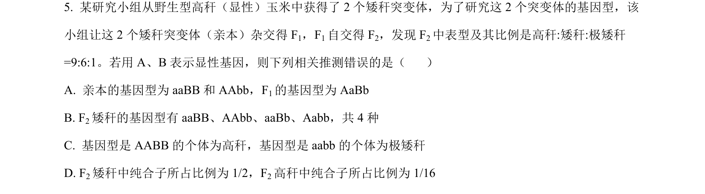
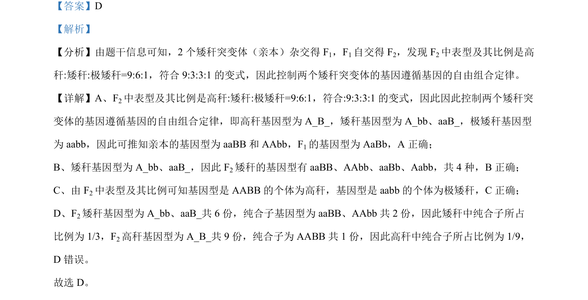

考点：自由组合定律 性状分离比变式 基因型推断

6:1性状分离比考查自由组合定律的变式应用与基因型推导。

📄 原 PDF 第 4 页：
素材/真题/吉林/2008-2024·（吉林）生物高考真题/2023年高考生物试卷（新课标）（解析卷）.pdf
【答案】D 【解析】 【分析】由题干信息可知，2 个矮秆突变体（亲本）杂交得 F1，F1自交得 F2，发现 F2中表型及其比例是高 秆:矮秆:极矮秆=9:6:1，符合 9:3:3:1的变式，因此控制两个矮秆突变体的基因遵循基因的自由组合定律。 【详解】A、F2中表型及其比例是高秆:矮秆:极矮秆=9:6:1，符合:9:3:3:1的变式，因此因此控制两个矮秆突 变体的基因遵循基因的自由组合定律，即高秆基因型为 A_B_，矮秆基因型为 A_bb、aaB_，极矮秆基因型 为 aabb，因此可推知亲本的基因型为 aaBB和 AAbb，F1的基因型为 AaBb，A 正确； B、矮秆基因型为 A_bb、aaB_，因此 F2矮秆的基因型有 aaBB、AAbb、aaBb、Aabb，共 4 种，B正确； C、由 F2中表型及其比例可知基因型是 AABB 的个体为高秆，基因型是 aabb的个体为极矮秆，C正确； D、F2矮秆基因型为 A_bb、aaB_共 6 份，纯合子基因型为 aaBB、AAbb 共 2 份，因此矮秆中纯合子所占 比例为 1/3，F2高秆基因型为 A_B_共 9 份，纯合子为 AABB 共 1 份，因此高秆中纯合子所占比例为 1/9， D 错误。 故选 D。